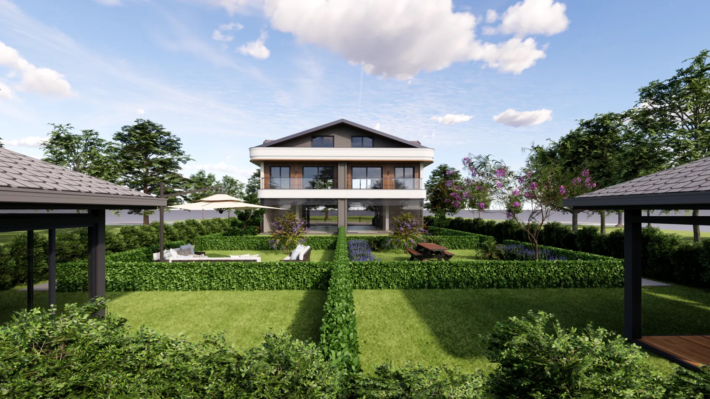
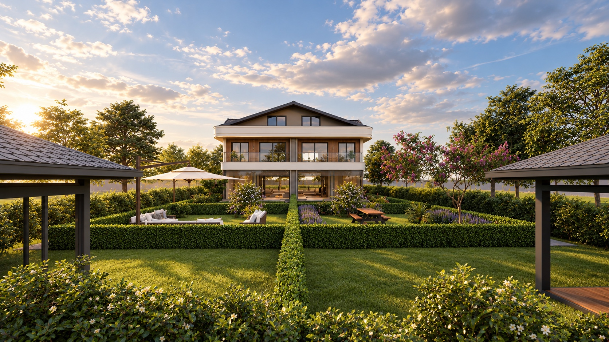
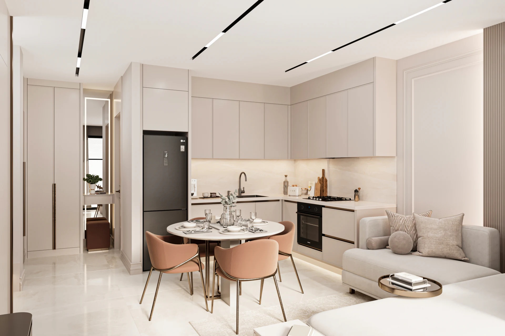
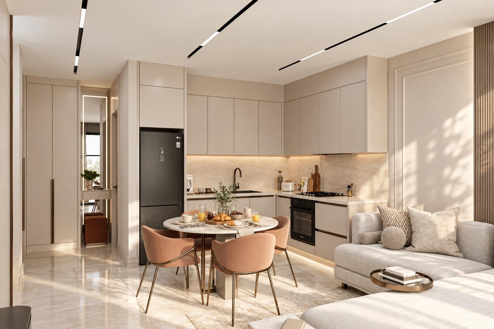

Proje sayfası
€300Hazır görselleriniz için markanıza özel bir sunum.
- Paylaşıma hazır tek proje sayfası
- Sağladığınız en fazla 16 görsel + 2 plan
- Proje bilgileri ve satış iletişim bilgileri
- Görsel iyileştirme dahil değildir
İyileştirilmiş iki görsel. Üç yeni detay karesi. Projenizin hem görsellerle hem de kolayca paylaşılabilen tek bir bağlantıyla nasıl sunulabileceğine dair bir örnek.


‹ ›

‹ ›Projenizin referanslarından hazırlanan daha yakın kareler. İncelemek için kaydırın. Yakından bakmak için bir kareyi açın.
Görsel çalışmalar: farklı kadrajlar, ışık ve günlük yaşam detayları. Proje referansları esas alınmıştır; pazarlama kullanımı öncesinde geliştiricinin onayı gerekir.
Görselleri, planları ve proje bilgilerini markanız altında bir araya getirin. Alıcılar sunumun tamamını telefonlarında açabilir ve WhatsApp üzerinden iletebilir.
Center Garden örneğini açınGörseller · Proje bilgileri
Bu çalışmalar tanışmak için hazırladığımız örnekler. Hazır materyaller için bir sayfa, mevcut satış kanallarınız için daha iyi görseller veya tümünü birleştiren bir sunum paketi.
Hazır görselleriniz için markanıza özel bir sunum.
Mevcut 10 görünüm; daha iyi ışık, malzeme ve atmosferle geliştirilir. Projenin mimarisi korunur.
Fiyat 10 görsel içindir. Farklı adetler için kapsam ayrıca belirlenebilir.
Görselleri iyileştirmek için başvurunAynı 10 görsellik iyileştirme paketi ve eksiksiz sunum materyalleri.
Her paket tek bir proje veya konut tipini, tek dilde kapsar. €300 sayfa paketi, sağlanan ve onaylanan materyalleri gösterilen düzende birleştirir; bir bilgi düzeltme turu dahildir. €900 görsel paketi, sağlanan on görünümü iyileştirir ve tek seferde iletilen bir revizyon turunu kapsar; kırpılmış kopyalar ek görsel sayılmaz. €1400 kit, aynı on görsellik pakete üç ek detay veya yaşam karesi, markalı bir sayfa, bir PDF ve iki kampanya tasarımı ekler. Kit için tek bir toplu revizyon turu dahildir. Diğer adetler üretimden önce fiyatlandırılır. Yeterli referansı olmayan yeni bakış açıları, 3B modelleme ve etkileşimli turlar ayrıca değerlendirilir.
Mevcut görselleri, onaylı proje bilgilerini, marka ve iletişim bilgilerini gönderin. Düğmeler bir e-posta talebi açar. Ödeme öncesinde kaynakların uygunluğunu, kesin kapsamı ve teslim tarihini teyit ederiz. Barındırma ve teslim koşulları üretimden önce belirlenir; özel alan adı ve üçüncü taraf barındırma ücretleri ayrıdır. Yayımlama izniniz bulunan materyalleri kullanın.